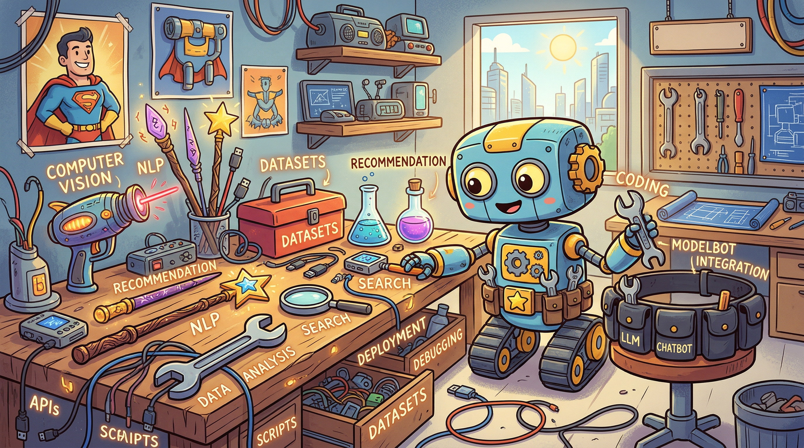

In AI, a new feature often depends on something far less visible: new examples, new corrections, new evidence about where the system fails. The real ceiling often appears elsewhere—the product was never built to expose its own weaknesses in a form the company can learn from. AI products need a data strategy, not just a feature strategy. The key question: What will this product need to learn next, and how exactly will it learn it? A feature is no longer just a user-facing capability; it is also a bet about future data. The strongest AI companies think of their systems as learning systems: products that create value today while deliberately generating the evidence needed to get better tomorrow.
Strategic portfolio decisions activate all three disciplines simultaneously: AI PM analyzes competitive dynamics, market positioning, and user value to decide which capabilities deserve investment; Vibe-Coding prototypes different strategic approaches quickly to test which create real differentiation versus false moats; AI Engineering assesses technical feasibility, maintenance burden, and integration costs that determine whether a strategy is sustainable.

Vibe coding enables rapid strategy prototyping. Before committing to a build/buy/bake decision, use quick prototypes to test whether your differentiated approach actually works. Vibe code a bake solution to see if it provides the defensibility you expect, or a buy approach to understand its real limitations. Strategy prototyping through vibe coding reveals which strategic bets are worth taking before you invest in implementation.
Objective: Master the AI product strategy toolkit including build/buy/bake decisions and portfolio allocation.
Chapter Overview
Revised from current chapters on AI PM fundamentals. This chapter covers AI product taxonomy, build/buy/bake decisions, value proposition design, and portfolio allocation for AI products.
Four Questions This Chapter Answers
- What are we trying to learn? How to make strategic build/buy/bake decisions and how to position AI products in a competitive portfolio.
- What is the fastest prototype that could teach it? A build/buy/bake analysis of your most promising AI initiative, mapping where you have defensible advantage versus commodity capabilities.
- What would count as success or failure? Clear taxonomy of your AI product portfolio showing which initiatives create differentiation and which are commodity infrastructure.
- What engineering consequence follows from the result? Strategic investment should flow to differentiated AI capabilities while leveraging commodity AI for commoditized components.
Learning Objectives
- Apply the AI product taxonomy framework
- Make informed build/buy/bake decisions
- Design value propositions for AI products
- Think about AI product portfolios